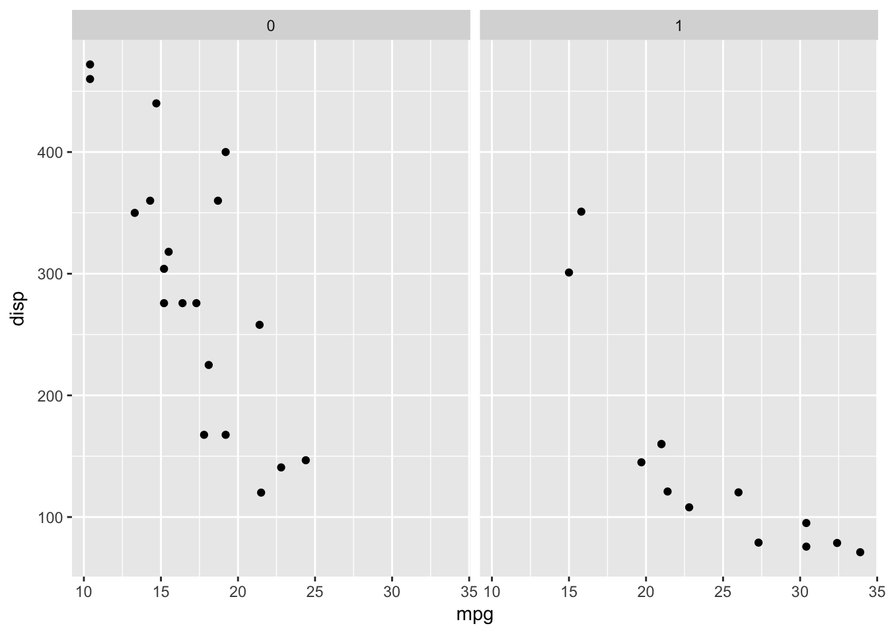

The following ggplot template comes from the book R for Data Science by Garrett Grolemund & Hadley Wickham.
ggplot(data = <DATA>) +
<GEOM_FUNCTION>(
mapping = aes(<MAPPINGS>),
stat = <STAT>,
position = <POSITION>
) +
<COORDINATE_FUNCTION> +
<FACET_FUNCTION>Each ggplot2 plot is a combination use of seven parameters as you can in the template.
DATA: contains values presented on a plot.MAPPINGS: determines how values are mapped to plot elements.STAT: the rule of transforming original values to new values and then mapping new values to plot elements.POSITION: arranges locations of observations presented on a plot.COORDINATE_FUNCTION: provides several different coordinate systems.FACET_FUNCTION: split plot into facets.ggplot(data = mtcars) +
geom_point(mapping = aes(x = mpg, y = disp),
stat = 'identity',
position = 'identity') +
coord_cartesian() +
facet_grid(~am)